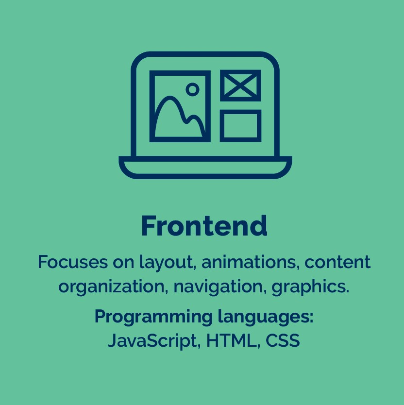

Що таке IT
(Information Technology) - це галузь, пов'язана з обробкою, зберіганням, передачею та використанням інформації за допомогою комп'ютерних технологій. Вона включає різні області, такі як програмування, розробка програмного забезпечення, мережеві технології, бази даних, кібербезпека, машинне навчання і штучний інтелект, веб-розробка, ігрова індустрія і багато іншого. IT-галузь швидко розвивається та постійно пропонує нові можливості для покращення нашого життя. Вона також є однією з найдинамічніших і найперспективніших галузей у світі, забезпечуючи безліч можливостей для кар'єрного та особистісного зростання.
На цьому сайті ви зможете ознайомитися с вибіркою книг для Fronted та Backend розрбників. Нижче можна обрати категорію яка вас цікавить.
Категорії
-
Front-End
Front-End (фронтенд) - це напрямок у веб-розробці, який відповідає за створення інтерфейсу користувача (UI) сайтів і веб-додатків. Розробник фронтенду займається створенням HTML, CSS та JavaScript коду, який відображає візуальний інтерфейс у браузері користувача.
Натисніть на зображення, щоб перейти до збірки
-
Back-End
Back-End (бекенд) - це напрямок у веб-розробці, який відповідає за створення та підтримку серверної частини веб-додатків та сайтів. Розробник бекенд займається написанням коду мовами програмування, таких як PHP, Python, Ruby, Java, та інших.